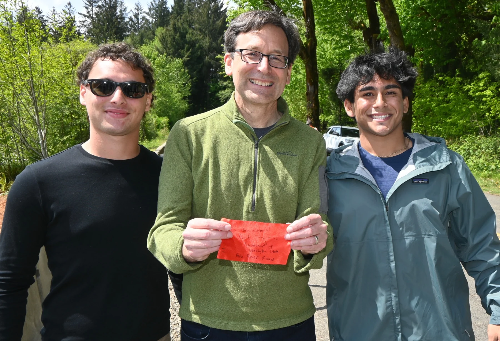
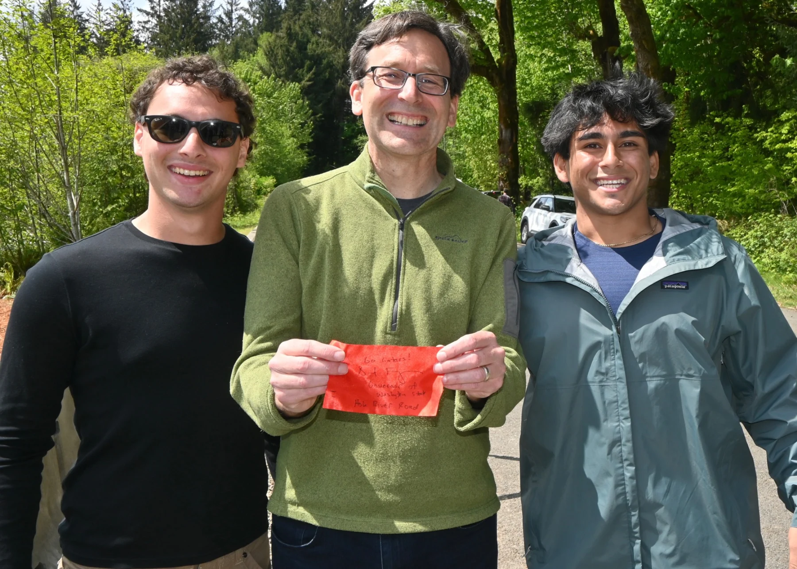
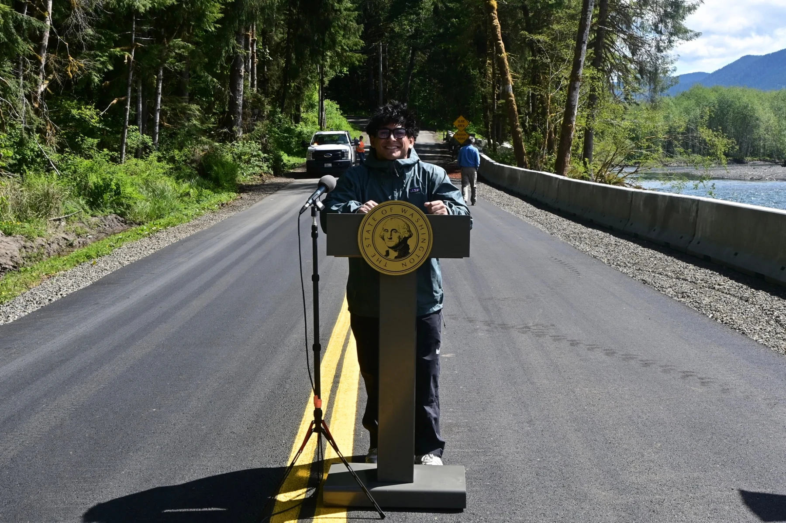
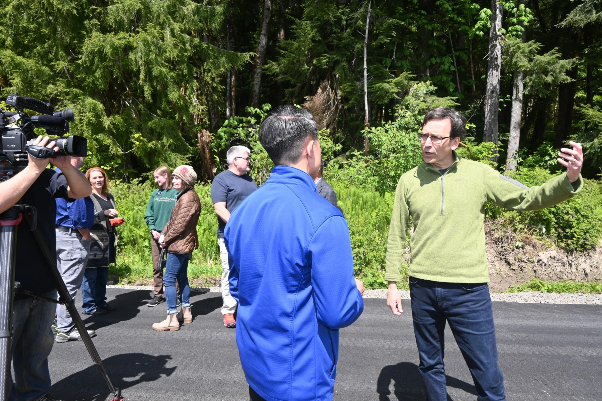
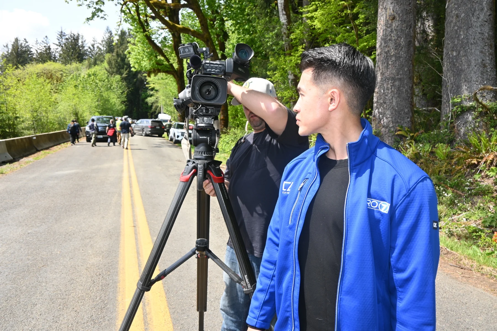
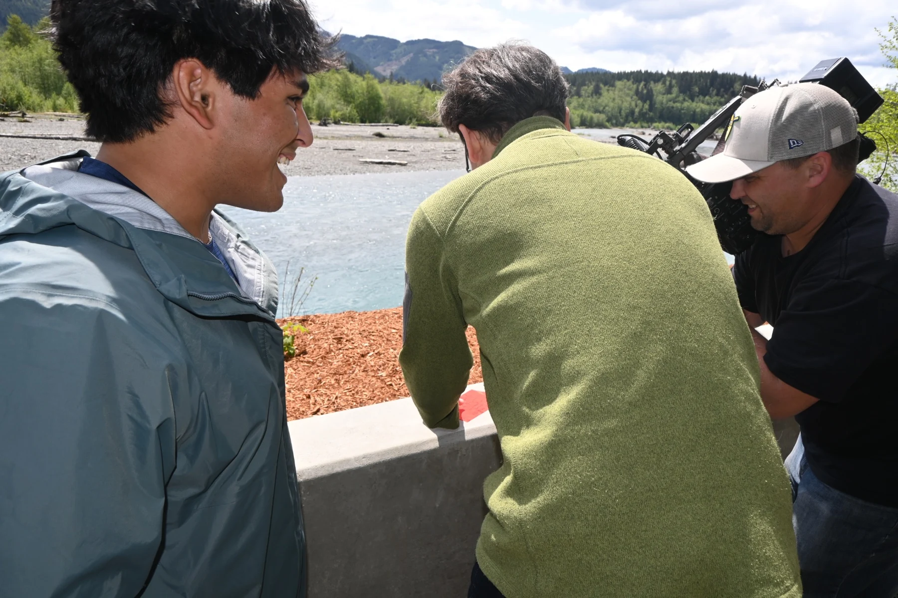
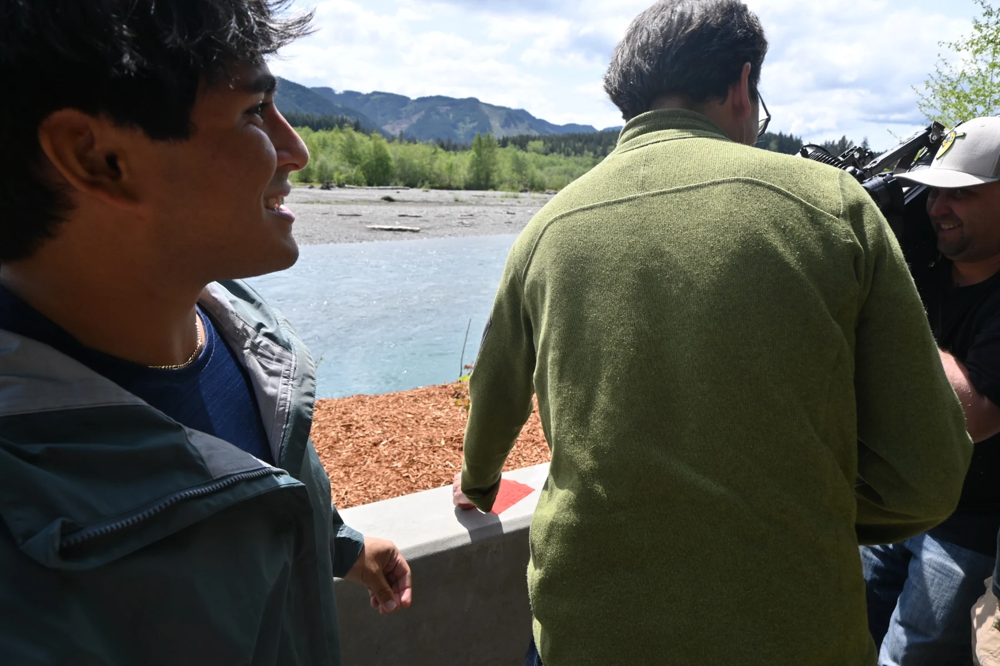
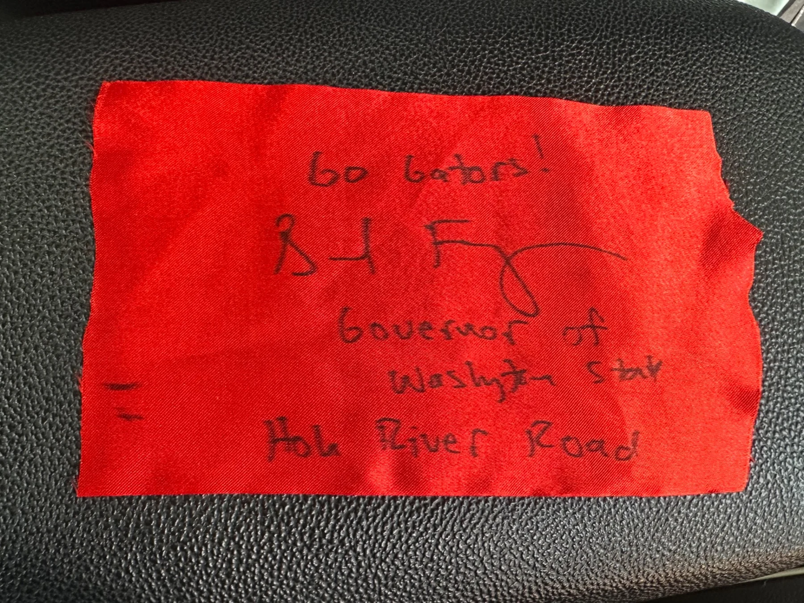

Trip highlight · Olympic National Park · May 8, 2025
The ribbon that came home with us.
We drove from Florida to the Hoh Rainforest, and came home with more than photos. We listened to Governor Ferguson speak at the reopening, got a piece of the ceremonial ribbon, and I ended up on the news. That ribbon stayed in our car as a good luck charm for the rest of the trip. Now it’s framed in my house.

A day I’ll remember
On May 8, 2025, the road to the Hoh Rainforest reopened after months of closure from storm damage. Standing there and hearing Governor Bob Ferguson speak, I kept thinking about how much it matters that people can get into these parks. We had driven across the country for places like this. Being there when access returned became one of the moments that stayed with me.
We listened to Governor Ferguson speak about the reopening, and afterward we got a piece of the ribbon from the ribbon-cutting ceremony. It meant a lot to me. I feel strongly that parks should be open so people can experience places like this.
“Inspiring — the way they all spoke about this. You could feel it.”
— My words in the KIRO7 report
A ribbon that stayed with us
We kept that ribbon in our car for the rest of the trip as a good luck charm. It traveled with us through everything that came next. Now it’s framed in my house—a reminder of the day we were there for the reopening, and of a trip I’ll always remember.
My moment on the news
Watch the interview clip from the reopening.
Interview footage: KIRO7. Original reporting by Louie Tran.
Read the story on Yahoo →Read the original KIRO7 report →Moments from reopening day






